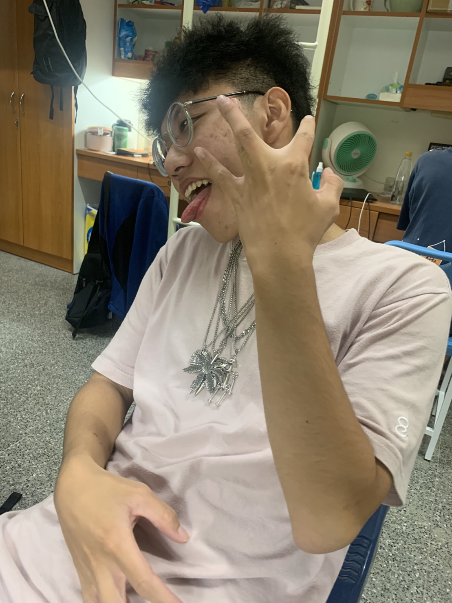

這次書展主要是介紹兩位作家，一位是吳念真老師，另一位是三毛老師，這兩位作家在台灣都是非常有影響力的 人物，這次的書展想要從他們多年的生活經驗與觀念中學習到不同的思考方式與面向，從中去學習他們的精神與 想法，有時候一個人的思考、經驗、想法可以改變很多人，將他們的生活變得更好，把許多生活真諦傳給讀著們。
吳念真
1967年吳念真念完侯硐國小，因成績優異考上第一志願省立基隆中學初中部。
初中畢業那年因父親挖礦時被壓斷腿，身為長子的吳念真只好輟學打工以幫補家
計。他到臺北某診所擔任藥劑員，第一個月薪金只有300元台幣。他白天上班，晚
上讀書，在延平中學補校完成高中學業。1976年吳念真退伍後，開始從事小說創
作，並進入輔仁大學夜間部會計系，白天則擔任臺北市立療養院圖書館管理員。
其小說多以描繪社會中下階層人民的生活為主，頗受好評，曾連續三年獲得聯合
報小說獎，並獲得第十屆吳濁流文學獎。
陳平出生於四川重慶，祖籍浙江省定海縣，父親陳嗣慶是位律師、母親繆
進蘭。陳平家中排行第二，有一個姐姐陳田心與二個弟弟陳聖、陳傑參姐姐陳田
心比三毛大3歲。抗日戰爭勝利後跟著父母搬到南京，後隨在第二次國共內戰中
戰敗的國民黨遷到臺北。陳平在臺北就讀臺北市中山區中正國民小學，1954年
考入台灣省立台北第一女子中學。小時就喜歡撿拾別人丟棄的物品把玩，自得其
樂。原名陳懋平，後來因為學不會寫懋字而自己改名為陳平。曾先後就讀於臺北
中國文化學院哲學系、西班牙馬德里大學文哲學院、德國歌德語文學院，是臺灣
1970至1980年代的著名作家。三毛於1991年住院時逝世。三毛在2009年中國「新
中國60年最有影響力文化人物網路評選」活動中文學類排名第十，總人氣榜排名
第三十五名。
馬哥 花哥 柚哥
網站架構設計員 網站排版設計師 網頁內容管理員